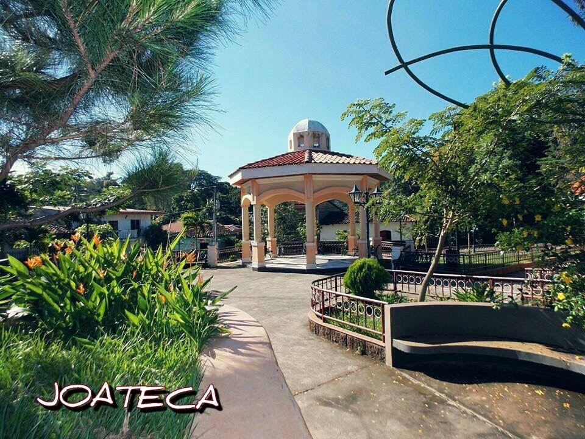
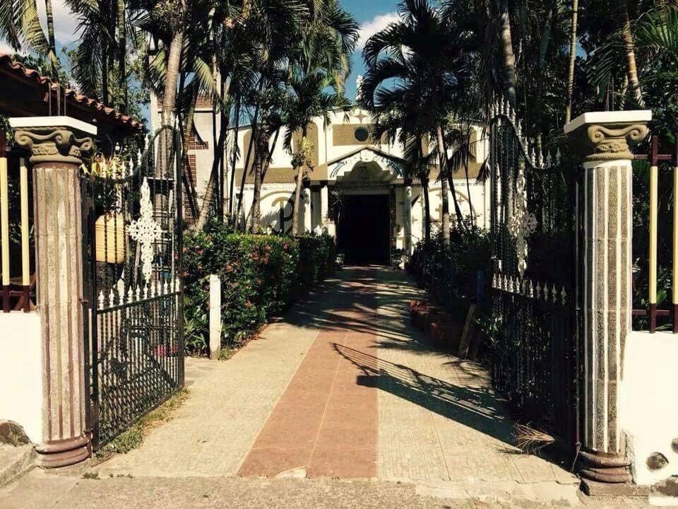

El Pueblo Joateca
Valle de los Ocotes
En lengua poton significa "Valle de los ocotes", es un pequeno pueblo que conserva de la forma de vida rural y el patrimonio arquitectonico.Rodeada por preciosos bosques de pino y por montanas, ademas de una preciosa iglasia colonial fiel reflejo de que el tiempo se ha detenido en este hermoso rincon de El Salvador.
Joateca fue un pueblo Lenca precolombino.El 11 de marzo de 1890 se erigio en pueblo.EL 9 de abril de 1893 se extinguio.El 17 de abril de 1894 se convirtio de nuevo en pueblo.Primero pertenecio al distrito de El Rosario, luego al de Jocoaitique.Admistrativamente esta divido en tres cantones y 17 caserios y su area urbana compuesta de 6 barrios.

